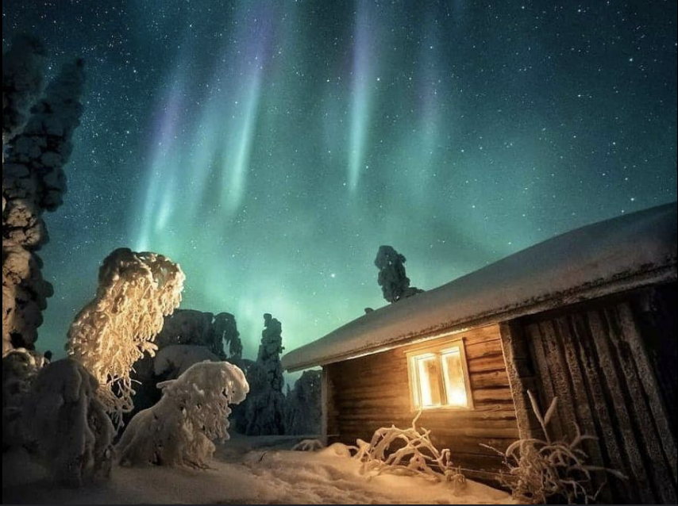

Tutustu Lapin kauneuteen ja elämyksiin ympäri vuoden. Täällä saat kokea luonnonjäät, huskyretket ja vaellukset.
Nauti maailman upeimmista luonnonjäistä Lapissa. Tässä muutama esimerkki Lapin kauniistajärvistä.
Koe vauhdikas huskysafari Lapin upeissa lomakohteissa.
Varaa ainutlaatuinen opastettu vaellusmatka!
Lappi on täynnä herkullisia paikallisia ruokia ja tunnelmallisia ravintoloita. Tässä muutama vinkki, mitä kannattaa maistaa ja missä syödä:
Perinteinen lappilainen herkku, joka valmistetaan poronlihasta. Tarjoillaan usein muusin tai perunoiden kera.
Lue lisääTämä perinteinen kalapasteija on täynnä kalaa, lihaa ja mausteita, ja se on Lapin alueen suosittu ruokalaji.
Lue lisääTämä herkullinen kalakeitto on täydellinen talvinen ruoka. Lohta, perunoita, kermaa ja tilliä – makuelämys, joka vie kielen mennessään.
Lue lisääVuolaan joen ääreltä löytyneet tuoreet koivunlehdet, Sallan kivisillä tuntureilla vaeltanut poro ja maan pohjoisin kuha aavistuksen riitteisestä järvivedestä ovat kaikki ammentaneet puhdasta ja raikasta pohjoisen maaperää, imeneet itseensä kaiken sen voiman mitä taivaankannen valo on antanut. Tuoksut, maut, pakkanen, aurinko, valo ovat kaikki syitä ruokalistamme erityiseen sisältöön.
Lue lisääSuomen puhtaassa maassa viljelty vilja löytää leivän muodon. Kotimaiset luomukananmunat muuttuvat pastaksi. Muoniosta kalastettu siika, syksyllä savustettu särki. Jäätelö tehdään jokaisena iltana Lapin lehmän maidosta. On aika kaivaa esille perinteiset reseptit ja tuoda ne tähän päivään. Keittiömestari Sirly Ylläsjärvi on viettänyt Lapissa 14 vuotta, ja menu on rakennettu niiden oppien mukaan.
Lue lisääLaskukansan olohuone Levin eturinteen juurella aamusta iltamyöhään joka päivä! Kota hemmottelee kävijäänsä kahvilana, after ski -baarina sekä viini-, cocktail-, ja lounasravintolana kauden jokaisena päivänä.
Ravintola Kodan mukavilla sohvilla viihtyy niin perheen pienimmät kuin jo kokeneemmatkin Levin kävijät. Kodassa voi nauttia kattavan ruokatarjonnan lisäksi lämmintä kaakaota, tuoreista raaka-aineista valmistettuja drinkkejä, laadukkaita oluita, viinejä, sekä kuumia juomia.